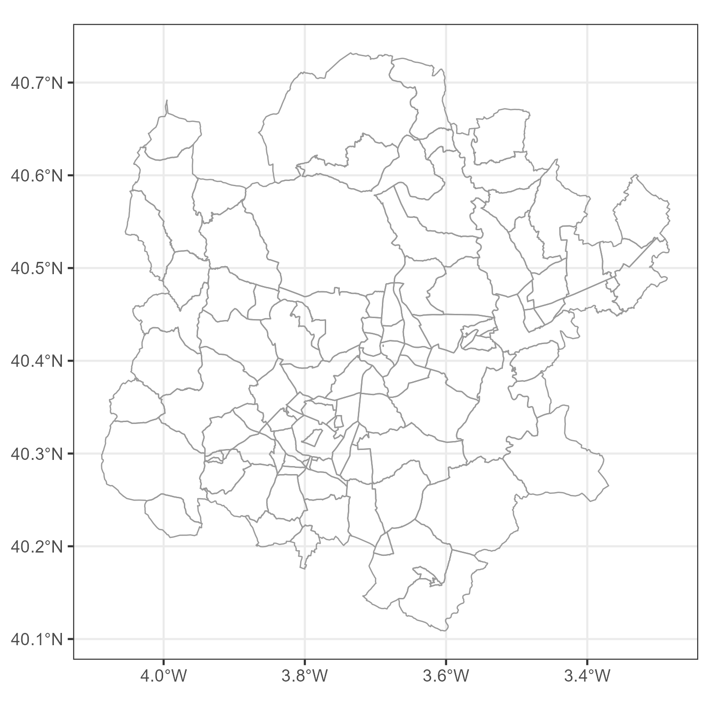
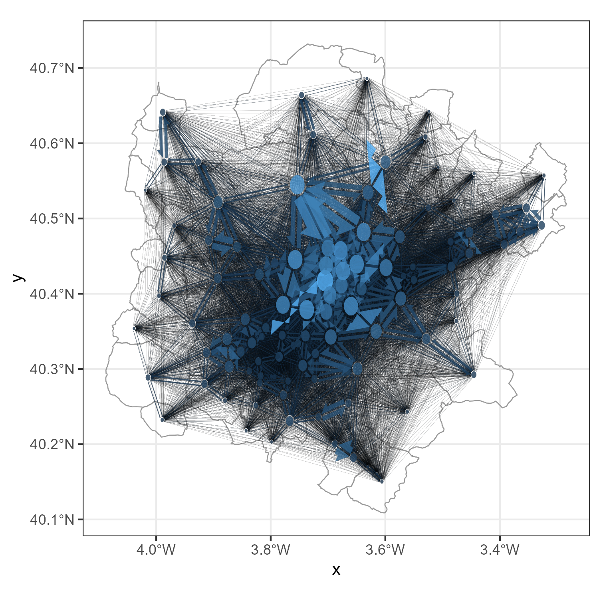
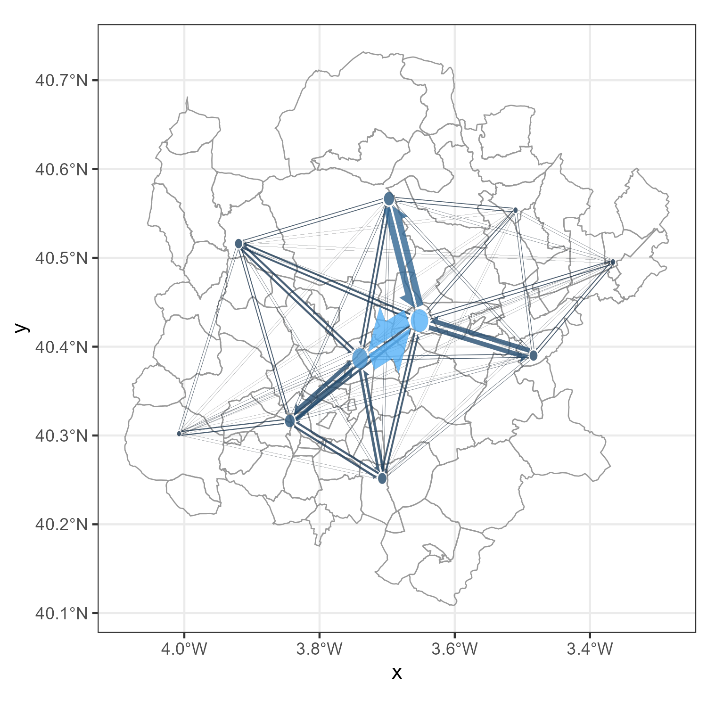
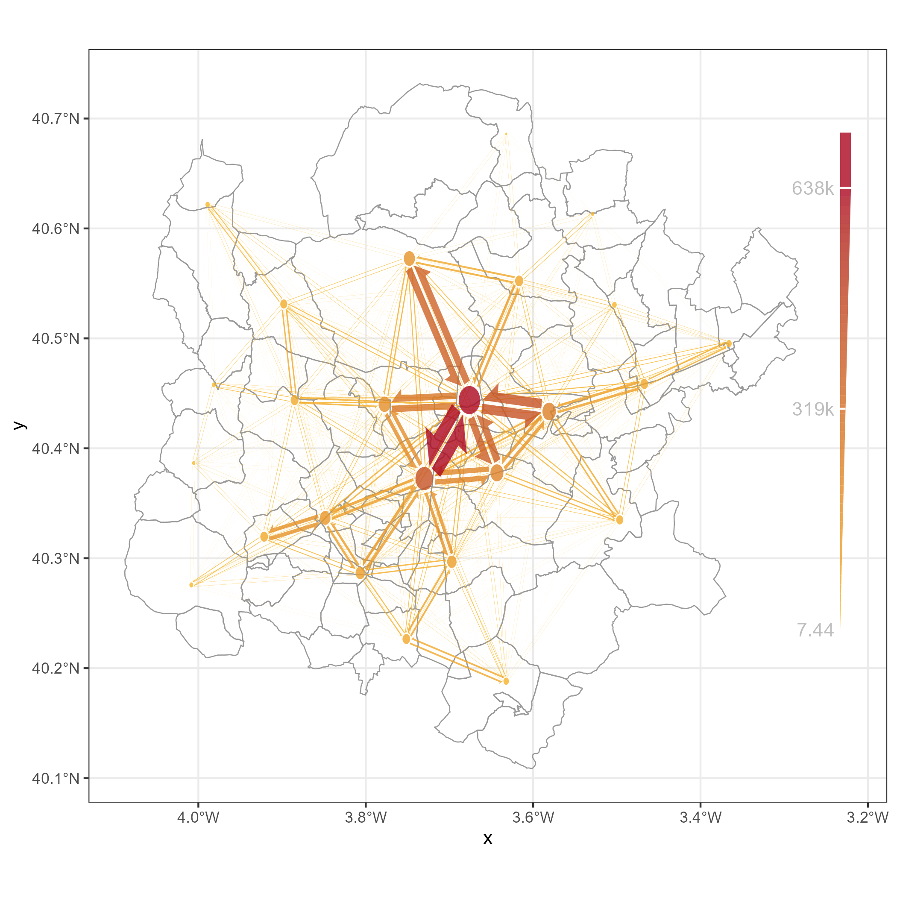
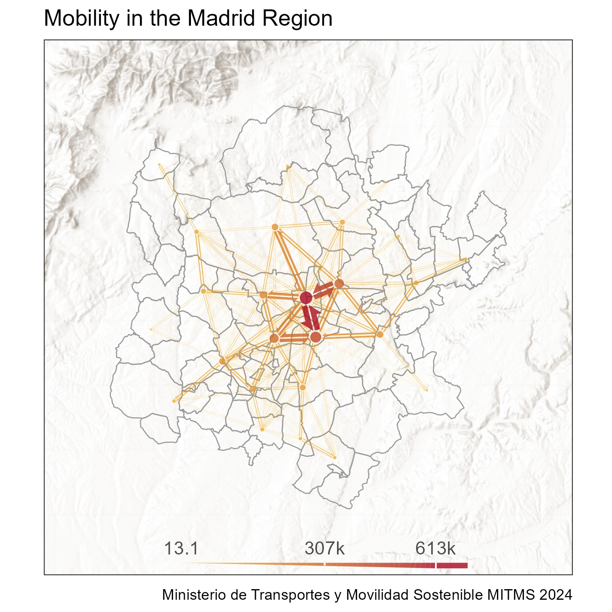
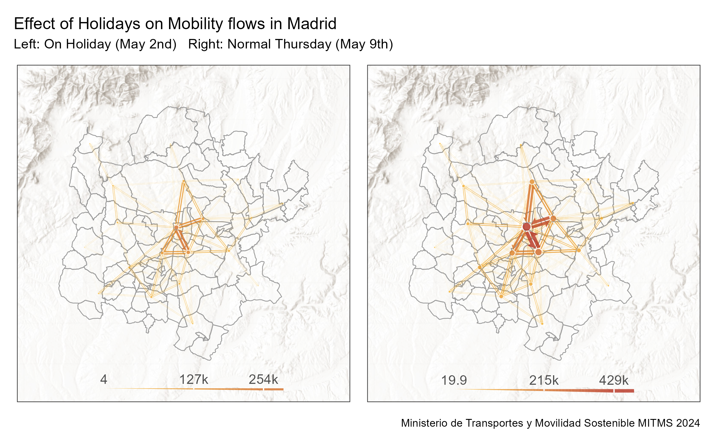
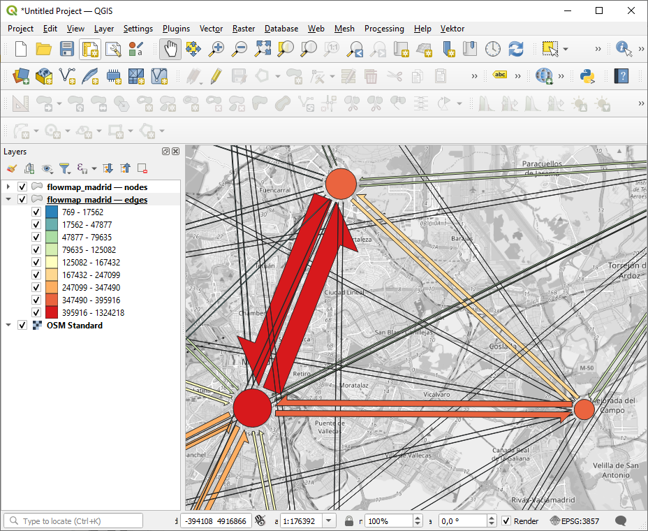

![]()
library(spanishoddata)
library(tidyverse)
library(sf)
library(flowmapper)
library(basemaps)
library(ggnewscale)
library(patchwork)2b. 📊 Tutorial: Visualization of Mobility Using flowmapper and flowmapblue
Visualization of Mobility using flowmapper & flowmapblue
1 Setup
First, load the required libraries for visualization.
We also set the data directory to the data folder, where the data will be downloaded by the spanishoddata package.
spod_set_data_dir("data")1.1 Loading the data
We will download data for the city of Madrid, for two days: May 2nd and May 9th, 2024. May 2nd is a holiday in Madrid, so we can expect different mobility patterns compared to a regular Thursday like May 9th.
dates <- c("2024-05-02", "2024-05-09")If you are using our provided Binder container in a web browser to follow the tutorial, do not try to analyze more than 2 days at once, as it will likely crash the instance. In this case, even the magic of DuckDB does not help overcome the 2GB memory limit. If you computer has 4-8 GB of RAM, you should be good to go.
For these days, we download the data using spod_get().
If you are using our pre-converted data from SSD
If you are using the files copied from the SSD passed around during the workshop (kindly, remember to return it), you can instead use spod_connect() function to load the pre-converted data in DuckDB format that is optimized for speed. In this case you will be able to quickly analyze multiple dates available in respective folders of the SSD. Open the *.Rproj file in the root of the folder you copied and see some starter code in start-here.R to point the spod_connect() towards a *.duckdb file.
| Folder | Dates |
|---|---|
| 5GB_2023_15-aug-15-sep_od_distr | 15 August — 15 September 2023 |
| 10GB_2023_aug-sep_od_distr | 1 August — 30 September 2023 |
| 15GB_2023_jul-aug-sep_od_distr | 1 July — 30 September 2023 |
| 60GB_2023_od_distr | 1 January — 31 December 2023 |
flows <- spod_get(
type = "origin-destination",
zones = "districts",
dates = dates
)These are origin-destination flows, which contain several million rows. For creating flow maps, we are interested in the total number of flows between each pair of districts. Therefore, we count the number of trips between each pair of origin and destination districts. The result is a data frame with three columns: o (origin), d (destination), and value (number of trips).
total_flow_counts <-
flows |>
group_by(o = id_origin, d = id_destination) |>
summarise(value = sum(n_trips, na.rm = TRUE), .groups = "drop") |>
arrange(desc(o), d, value) |>
collect()
head(total_flow_counts)# A tibble: 6 × 3
o d value
<fct> <fct> <dbl>
1 31260_AM 01017_AM 32.8
2 31260_AM 01028_AM 27.7
3 31260_AM 01036 3.92
4 31260_AM 01051 2.51
5 31260_AM 0105902 22.3
6 31260_AM 0105903 6.24Besides the flow data, we also want the spatial boundaries of the districts for visualisation purposes. We can access these districts using the spod_get_zones() function, and we can filter for the Madrid region using the luas_mitma column, which contains the name of the region.
Because we first want to work with flowmapblue, which expects inputs to be in the WGS84 coordinate reference system, we transform the districts to the WGS84 system (EPSG:4326).
zones <- spod_get_zones(zones = "districts", ver = 2)
zones_madrid_4326 <- zones |>
filter(luas_mitma == "GAU Madrid") |>
st_transform(4326) # flowmapblue assumes coordinates in wgs84For these districts, we extract the centroids, which will be used as the position of the nodes in all the graph visualisations we will be able to create.
zones_madrid_coords_4326 <-
zones_madrid_4326 |>
st_centroid() |>
st_coordinates() |>
as.data.frame() |>
mutate(name = zones_madrid_4326$id) |>
rename(x = X, y = Y)For visualising the Madrid regions, we only keep flows which both originate and end in the Madrid region.
total_flow_counts_m <-
total_flow_counts |>
filter(o %in% zones_madrid_4326$id & d %in% zones_madrid_4326$id)
head(total_flow_counts_m)# A tibble: 6 × 3
o d value
<fct> <fct> <dbl>
1 28903 28002 78.0
2 28903 28004 58.6
3 28903 2800501 131.
4 28903 2800502 168.
5 28903 2800503 156.
6 28903 2800504 177.2 Interactive visualizations with flowmapblue
2.1 Setting the mapbox token
We will use the flowmapblue library to create an interactive flow map. This package uses Mapbox for rendering the background basemap, so we need to set a Mapbox access token. You can get a free token by signing up at Mapbox.
Tip
You can also copy our API key for MapBox from this doc, but it will only work on the day of the workshop, so we recommend you to get your own free token if you plan to keep on using {flowmapblue} after the workshop.
# Sys.setenv(MAPBOX_TOKEN = your_mapbox_token)2.2 Creating the flowmap
We then load the flowmapblue library.
library(flowmapblue)flowmapblue expects data in a specific format:
A
flowsdata frame, which should contain the columnsorigin,dest, andcount.A
locationsdata frame, which should contain the columnsid,lon, andlat.
We have everything we need already, we just need to rename the columns in our data frames to match these expectations.
total_flow_counts_m <-
total_flow_counts_m |>
mutate(origin = o, dest = d, count = value)
zones_madrid_coords_4326 <-
zones_madrid_coords_4326 |>
mutate(
id = name,
lon = x,
lat = y
)Now we can create the flowmap using the flowmapblue() function. We pass the locations and flows data frames, and we also set the Mapbox access token.
flowmap <- flowmapblue(
locations = zones_madrid_coords_4326,
flows = total_flow_counts_m,
mapboxAccessToken = Sys.getenv("MAPBOX_TOKEN"),
darkMode = TRUE, # [!] Also try light mode!
)
flowmap
# htmlwidgets::saveWidget(
# flowmap,
# "media/2-flow-vis/flowmap_widget.html",
# selfcontained = TRUE
# )3 Static visualizations with flowmapper
The visualizations created by flowmapblue are great for interactive exploration, but sometimes we want to create static visualizations that can be easily shared or included in reports or scientific articles. For this, we can use the flowmapper package, which allows us to create flow maps using ggplot2.
Thereby, we also unlock the power of customization that ggplot2 offers, such as changing colors, font, and the many associated libraries which offer additional functionality, such as basemaps for adding a large variety of different background basemaps.
3.1 Making a basic flowmap using flowmapper
To start with, we plot the districts.
zones_madrid_plot <-
ggplot() +
geom_sf(
data = zones_madrid_4326,
fill = NA,
col = "grey60",
linewidth = 0.3
) +
theme_bw() +
theme(legend.position = "none")
zones_madrid_plot
This serves as the canvas on which we create the flowmap. The obvious next step, of course, is to add the flows. To add all the connections between the districts, we can use the add_flowmap() function. This function takes the origin-destination data and the coordinates of the nodes, and it adds the flows to the plot.
zones_madrid_plot_1 <-
zones_madrid_plot |>
add_flowmap(
od = total_flow_counts_m,
nodes = zones_madrid_coords_4326,
)
zones_madrid_plot_1
As we can see, it is very difficult to interpret the flow map when all flows are plotted. The lines overlap and it is hard to see the individual flows.
3.2 Making a pretty flowmap
Clearly, there are many ways we can improve this map.
3.2.1 Aggregating nodes into clusters
To reduce the number of connections, and make the flow map more interpretable, we can cluster the nodes. This means that we hierarchically merge nearby nodes into clusters, and we only show the flows between the clusters. This reduces the number of lines in the plot and makes it easier to see the overall patterns.
In flowmapper, this is done by specifying the parameter k_nodes, where k is the number of nodes that should remain after clustering.
The choice of k depends on the distribution of the nodes, the size of the map, and the desired visual effect. In our experience, a number between 10 and 30 works fine for general visualizations.
zones_madrid_plot_2 <-
zones_madrid_plot |>
add_flowmap(
od = total_flow_counts_m,
nodes = zones_madrid_coords_4326,
k_nodes = 10
)
zones_madrid_plot_2
3.2.2 Changing the visuals of the nodes and edges
We can also change the visuals of the nodes and edges. add_flowmap() accepts a wide range of arguments. For example, we can change the color of the edges, the width of the edges, and the color of the nodes. We can also add a legend to the plot.
# add the flows
zones_madrid_plot |>
add_flowmap(
od = total_flow_counts_m,
nodes = zones_madrid_coords_4326,
outline_col = "NA",
edge_width_factor = 0.8,
add_legend = "right",
legend_gradient = TRUE,
k_nodes = 25
) +
scale_fill_gradient(
low = "#FABB29",
high = "#AB061F"
)
3.2.3 Adding a raster base map
We can use the basemaps package to add a raster base map to the flow map. This can help to provide context to the flow map and make it more visually appealing.
The basemaps are provided in the World Mercator projection (EPSG:3857), so we want to transform the zones to this projection before adding the base map.
zones_madrid_3857 <- zones |>
filter(luas_mitma == "GAU Madrid") |>
st_transform(3857)
zones_madrid_coords_3857 <-
zones_madrid_3857 |>
st_centroid() |>
st_coordinates() |>
as.data.frame() |>
mutate(name = zones_madrid_3857$id) |>
rename(x = X, y = Y)Then we can use the basemap_ggplot() function to create a base map. We can specify the map service and the map type. In this case, we use a hillshade map from ESRI, which provides a nice background for the flow map. We also set the alpha parameter to make the base map slightly transparent, so that the flow map is more visible.
zones_madrid_plot_with_basemap <-
basemap_ggplot(
st_buffer(zones_madrid_3857, 15000), # add a buffer to the zones to avoid clipping the edges
map_service = "esri",
map_type = "world_hillshade", # [!] Try basemaps::get_maptypes() and explore some alternative basemaps
alpha = 0.9
) +
theme_bw() +
theme(
axis.title = element_blank(),
axis.text = element_blank(),
axis.ticks = element_blank(),
legend.position = "none"
) +
scale_x_continuous(expand = expansion(0, 0)) +
scale_y_continuous(expand = expansion(0, 0)) +
ggnewscale::new_scale_fill() +
geom_sf(data = zones_madrid_3857, fill = NA, col = "grey60", linewidth = 0.3)
zones_madrid_plot_with_basemap_flowmap <-
zones_madrid_plot_with_basemap |>
add_flowmap(
od = total_flow_counts_m,
nodes = zones_madrid_coords_3857,
outline_col = "NA",
edge_width_factor = 0.7, # [!] What if you set this to the default of 1?
k_nodes = 25, # [!] Experiment with different numbers of nodes.
add_legend = "bottom",
legend_col = "gray30",
legend_gradient = TRUE,
legend_nudge_y = -10000
) +
scale_fill_gradient(low = "#FABB29", high = "#AB061F") + # [!] Change the colors here
labs(
title = "Mobility in the Madrid Region",
caption = "Ministerio de Transportes y Movilidad Sostenible MITMS 2024"
)
zones_madrid_plot_with_basemap_flowmap
3.3 ! Bonus: Comparative Maps
We can also create comparative maps, for example, comparing the flows on the two days we have data for.
Before, we aggregated the data for both our dates. However, we can also do it separately for each day. To do this, we simply have to add the date column to the grouping in the group_by() function. This will create a separate count for each day.
We also again filter down to keep only the flows that involve Madrid districts, as we did before. And then, we split the dataframe into a list of two dataframes, one for each date. This will allow us to create a separate flow map for each day.
flow_counts_by_date <-
flows |>
group_by(o = id_origin, d = id_destination, date) |>
summarise(value = sum(n_trips, na.rm = TRUE), .groups = "drop") |>
collect() |>
arrange(o, d, date, value) |>
# again, filter down to keep only the ones involving madrid
filter(o %in% zones_madrid_3857$id & d %in% zones_madrid_3857$id) |>
# split the dataframe by date into a list
group_by(date) |>
group_split()We can then create a list of the coordinates for each date, so that we can use them in the flow maps. As in this case, the nodes do not change their position, we can just repeat the coordinates for each date into a list (of the same length as flow_counts_by_date).
# create a list of the same length as flow_counts_by_date, with each element being zones_madrid_coords_3857
zones_madrid_coords_3857_list <-
rep(list(zones_madrid_coords_3857), length(flow_counts_by_date))Passing the od and nodes arguments as lists allows us to create a flow map for each date in the list. The add_flowmap_list() function will then create a list of plots with a separate flow map for each date, at a common scale. In this case, we compare two days, so we get a list of two plots.
comparative_plots <-
flowmapper::add_flowmap_list(
zones_madrid_plot_with_basemap,
od = flow_counts_by_date,
nodes = zones_madrid_coords_3857_list,
outline_col = "NA",
edge_width_factor = 0.7,
k_nodes = 20,
add_legend = "bottom",
legend_col = "gray30",
legend_gradient = TRUE,
legend_nudge_y = -10000
)A nice way to visualize these two plots is to use the patchwork package, which allows us to combine multiple ggplot objects into one plot. In patchwork syntax, we use the | operator to combine the two plots side by side, and we use the plot_annotation() function to add a title and subtitle to the plot. Plot elements can be added to the plot using the & operator, which allows us to add a color scale to both plots.
comparative_plot_combined <-
(comparative_plots[[1]] | comparative_plots[[2]]) +
plot_annotation(
title = 'Effect of Holidays on Mobility flows in Madrid',
subtitle = "Left: On Holiday (May 2nd) Right: Normal Thursday (May 9th)",
caption = "Ministerio de Transportes y Movilidad Sostenible MITMS 2024"
) &
scale_fill_gradient(low = "#FABB29", high = "#AB061F", limits = c(0, 500000))
comparative_plot_combined
3.4 Exporting flowmaps as spatial objects
ggplot is a versatile environment, but it has its limitations. There are other softwares, like GIS, that offer additional visualization methods for geospatial data. These data usually expect spatial objects, such as geopackages.
We can create spatial objects from flowmaps using the flowmap_sf() function from the flowmapper package. This function returns a list with two elements: edges and nodes, which are both sf objects.
sf_objects <- flowmap_sf(
od = total_flow_counts_m,
nodes = zones_madrid_coords_3857,
edge_width_factor = 0.8,
k_nodes = 10,
crs = 3857
)
sf_edges <- sf_objects$edges
sf_nodes <- sf_objects$nodesWe can write these sf objects in a variety of formats, such as a geopackage with one layer for edges, and one layer for nodes.
# export as a geopackage, one layer for the edges, one for the nodes
st_write(sf_edges, "flowmap_madrid.gpkg", delete_dsn = TRUE, layer = "edges")
st_write(sf_nodes, "flowmap_madrid.gpkg", delete_dsn = FALSE, layer = "nodes")Now we can use them in GIS software, such as QGIS!

Or visualise with any R package that supports sf objects, such as tmap, leaflet/leafgl, mapsf, or mapgl:
library(tmap)
tmap_mode("view")
interactive_tmap <-
tm_shape(sf_edges) +
tm_basemap("Esri.WorldTopoMap") +
tm_polygons(
fill = "flow",
col_alpha = 0,
fill_alpha = 0.8,
fill.scale = tm_scale_intervals(values = "brewer.yl_or_rd", style = "jenks")
) +
tm_shape(sf_nodes) +
tm_polygons(
fill = "flowsum",
col_alpha = 0,
fill_alpha = 0.8,
fill.scale = tm_scale_intervals(values = "brewer.yl_or_rd", style = "jenks")
)
interactive_tmap4 Suggested tasks for hands-on practice
- Holiday vs. Weekday Flows
- Using the two dates provided (May 2 and May 9, 2024), create side-by-side flow maps.
- Identify which district-to-district connections strengthen or weaken on the holiday.
- Using the two dates provided (May 2 and May 9, 2024), create side-by-side flow maps.
- Impact of the number of clusters in the flowmap
- Generate three static flow maps with different
k_nodesvalues (e.g. 10, 20, 30).
- See how changing the number of clusters alters your interpretation of major movement corridors.
- Generate three static flow maps with different
- Directional Imbalance Analysis
- Compute and map the net flow (outgoing minus incoming trips) for each district on a regular weekday.
- Find the top three “source” districts and top three “sink” districts.
- Compute and map the net flow (outgoing minus incoming trips) for each district on a regular weekday.
- Temporal Flow Dynamics
- Split a single day into two periods (e.g. morning rush vs. evening rush).
- Produce comparative flow maps for each period and comment on how peak directions shift over the day.
- Split a single day into two periods (e.g. morning rush vs. evening rush).
- Basemap & Styling Exploration
- Experiment with at least two different basemap services (e.g. ESRI hillshade vs. OpenStreetMap).
- Customize node colors and edge gradients to emphasize either high-volume flows or directional patterns—and reflect on which styling best conveys the story.
- Experiment with at least two different basemap services (e.g. ESRI hillshade vs. OpenStreetMap).
Tip
Feel free to consult any LLM you prefer for code examples. You can also use the {rdocdump} R package to export all documentation and vignettes from {spanishoddata} or other packages into a single text file—and then feed that to your model for richer code suggestions. This helps a lot for the packages that are newer then the model training cut-off date, or the ones that were recently updated with new features.
Quick Start: rdocdump
# Install
install.packages("rdocdump")
# Dump spanishoddata docs + vignettes to TXT
rdocdump::rdd_to_txt(
pkg = "spanishoddata",
file = "spanishoddata_docs.txt",
content = c("docs", "vignettes"),
force_fetch = TRUE,
keep_files = "none"
)Now just attach the spanishoddata_docs.txt file saved into the current project/working directory to your LLM prompt and ask for code examples using the data from the package.
Citation
BibTeX citation:
@online{kotov2025,
author = {Kotov, Egor and Mast, Johannes},
title = {IC2S2 2025 {Workshop:} {Mobility} {Flows} and {Accessibility}
{Using} {R} and {Big} {Open} {Data}},
date = {2025-07-21},
url = {https://e-kotov.github.io/spanish-open-mobility-workshop-ic2s2-2025/2-flow-vis-tutorial.html},
doi = {10.5281/zenodo.16238597},
langid = {en}
}
For attribution, please cite this work as:
Kotov, Egor, and Johannes Mast. 2025. “IC2S2 2025 Workshop:
Mobility Flows and Accessibility Using R and Big Open Data.” July
21, 2025. https://doi.org/10.5281/zenodo.16238597.